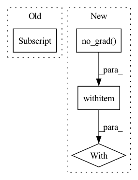

Pattern ID :1961
Before Change
:type inverse: bool, optional
if train:
self._parallel_variance(torch.mean(x, dim=0), torch.var(x, dim=0), x.shape[0] )
// scale back the data to the original representation
if inverse:After Change
:type no_grad: bool, optional
if no_grad:
with torch.no_grad() :
return self._compute(x, train, inverse)
else:
return self._compute(x, train, inverse)In pattern: SUPERPATTERN
Frequency: 6
Non-data size: 4
Instances Fragment ID: 13596111
Project Name: toni-sm/skrl
Commit Name: 3ff78a027e492182b7e8d539ce2233a89cdf9bc0
Time: 2022-07-08
Author: toni.semu@gmail.com
File Name: skrl/resources/preprocessors/torch/running_standard_scaler.py
M Class Name: RunningStandardScaler
N Class Name: RunningStandardScaler
M Method Name: forward(5)
N Method Name: forward(4)
M Parent Class: nn.Module
N Parent Class: nn.Module
M File Name: skrl/resources/preprocessors/torch/running_standard_scaler.py
N File Name: skrl/resources/preprocessors/torch/running_standard_scaler.py
M Start Line: 122
M End Line: 132
N Start Line: 115
N End Line: 150
Before Change
factor_code = (
self.factor_embeddings[f](factors[:, f]) * label_masks[:, [f]]
+ torch.matmul(assignment.probs, self.factor_embeddings[f] .weight) * (~label_masks[:, [f]])
)
assignments.append(assignment)After Change
for f in range(self.config["n_factors"]):
assignment = Categorical(logits=self.img_factor_embeddings[f](img_id))
with torch.no_grad() :
factor_values = torch.arange(self.config["factor_sizes"][f], dtype=torch.int64).to(img_id.device)
factor_embeddings = self.factor_embeddings[f](factor_values)
factor_code = ( Fragment ID: 13596110
Project Name: avivga/zerodim
Commit Name: 6f99249458de35cd5046b90d4e9044ab9cdf8cb4
Time: 2021-05-01
Author: avivga@gmail.com
File Name: network/training.py
M Class Name: FactorModel
N Class Name: FactorModel
M Method Name: forward(4)
N Method Name: forward(4)
M Parent Class: nn.Module
N Parent Class: nn.Module
M File Name: network/training.py
N File Name: network/training.py
M Start Line: 56
M End Line: 60
N Start Line: 55
N End Line: 64
Before Change
ign = ign.unsqueeze(-1).expand_as(batch_label) // shape: (batch_size, num_priors, num_classes)
batch_label[ign] *= -1
mask = batch_label >= 0
loss_c = self.focal_loss(conf_data[mask], batch_label[mask] , reduction="mean")
return (loss_l, loss_c)
After Change
if self.mutual_guide:
// match priors (default boxes) and ground truth boxes
with torch.no_grad() :
loc_t = torch.zeros(num, num_priors, 4).cuda()
conf_t = torch.zeros(num, num_priors).cuda().long()
overlap_t = torch.zeros(num, num_priors).cuda()
pred_t = torch.zeros(num, num_priors).cuda() Fragment ID: 13596109
Project Name: zhangheng19931123/mutualguide
Commit Name: 85219f93a8d5b54cb3ed9f06d86bb64d3f6d3552
Time: 2021-10-02
Author: heng.zhang@irisa.fr
File Name: utils/loss/multibox_loss.py
M Class Name: MultiBoxLoss
N Class Name: MultiBoxLoss
M Method Name: forward(4)
N Method Name: forward(4)
M Parent Class: nn.Module
N Parent Class: nn.Module
M File Name: utils/loss/multibox_loss.py
N File Name: utils/loss/multibox_loss.py
M Start Line: 27
M End Line: 102
N Start Line: 39
N End Line: 110
Before Change
if self.version == "B0":
if self.training:
var = x.var([0,2,3])
self.running_var = (self.momentum * self.running_var) + (1.0-self.momentum) * (x.shape[0] /(x.shape[0]-1)*var)
else:
var = self.running_var
sigma = var.view([1, self.insize, 1, 1]).expand_as(x)
After Change
if self.training:
var = x.var([0, 2, 3], unbiased=False)
n = x.numel() / x.size(1)
with torch.no_grad() :
self.running_var = exponential_average_factor * var * n / (n - 1)\
+ (1 - exponential_average_factor) * self.running_var
else:
var = self.running_var
Fragment ID: 13596107
Project Name: digantamisra98/evonorm
Commit Name: e64df8c7cc70ac2bb49fc1ec7d479cd1a07ebbef
Time: 2020-04-08
Author: mishradiganta91@gmail.com
File Name: evonorm2d.py
M Class Name: EvoNorm2D
N Class Name: EvoNorm2D
M Method Name: forward(2)
N Method Name: forward(2)
M Parent Class: nn.Module
N Parent Class: nn.Module
M File Name: evonorm2d.py
N File Name: evonorm2d.py
M Start Line: 51
M End Line: 57
N Start Line: 42
N End Line: 60
Before Change
batch = range(len(x)) // batch size
for i in batch:
x[i] = np.array(x[i]) // to numpy
x[i] = x[i][:, :, :3] if x[i].ndim == 3 else np.tile(x[i][:, :, None], 3) // enforce 3ch input
s = x[i].shape[:2] // HWC
shape0.append(s) // image shape
g = (size / max(s)) // gainAfter Change
x = torch.from_numpy(x).to(p.device).type_as(p) / 255. // uint8 to fp16/32
// Inference
with torch.no_grad() :
y = self.model(x, augment, profile)[0] // forward
y = non_max_suppression(y, conf_thres=self.conf, iou_thres=self.iou, classes=self.classes) // NMS
// Post-process Fragment ID: 13596106
Project Name: jeffwang0325/image-identification-for-self-driving-cars
Commit Name: f5429260ca4fbc208fc9ba80804e7215fefc8f72
Time: 2020-11-16
Author: glenn.jocher@ultralytics.com
File Name: models/common.py
M Class Name: autoShape
N Class Name: autoShape
M Method Name: forward(5)
N Method Name: forward(5)
M Parent Class: nn.Module
N Parent Class: nn.Module
M File Name: models/common.py
N File Name: models/common.py
M Start Line: 139
M End Line: 168
N Start Line: 141
N End Line: 172
Before Change
with torch.no_grad():
means, buckets, dists = kmeans(x, means, training=self.training, init=not self.initted)
indices = distribution(dists, window_size)
indices = indices.contiguous().view(*indices.size()[:2] , -1)
routed_means = batched_index_select(expand_dim(means, 0, b), buckets)
loss = F.mse_loss(x, routed_means) * self.commitmentAfter Change
dists, buckets = dists_and_buckets(x, means)
if update_means:
with torch.no_grad() :
means = kmeans_iter(x, means, buckets)
self.new_means = means
routed_means = batched_index_select(expand_dim(means, 0, b), buckets) Fragment ID: 13596105
Project Name: lucidrains/routing-transformer
Commit Name: 2042adb06111339b86814500f0c389759b8f6cdf
Time: 2020-05-27
Author: lucidrains@gmail.com
File Name: routing_transformer/routing_transformer.py
M Class Name: Kmeans
N Class Name: Kmeans
M Method Name: forward(3)
N Method Name: forward(3)
M Parent Class: nn.Module
N Parent Class: nn.Module
M File Name: routing_transformer/routing_transformer.py
N File Name: routing_transformer/routing_transformer.py
M Start Line: 396
M End Line: 410
N Start Line: 367
N End Line: 384